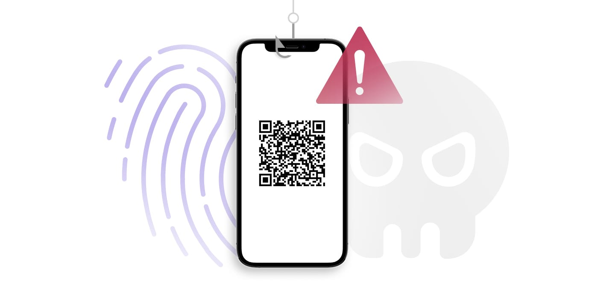

O quishing, ou QR phishing, é uma ameaça à segurança cibernética em que os invasores usam códigos QR para redirecionar as vítimas a sites maliciosos ou induzi-las a baixar conteúdo prejudicial. O objetivo desse ataque é roubar informações confidenciais, como senhas, dados financeiros ou informações de identificação pessoal (PII), e usar essas informações para outros fins, como roubo de identidade, fraude financeira ou ransomware. Esse tipo de phishing geralmente ignora as defesas convencionais, como gateways de e-mail seguros. Notavelmente, os códigos QR em e-mails são vistos por muitos gateways de e-mail seguros como imagens sem sentido, tornando os usuários vulneráveis a formas específicas de ataques de phishing. Os códigos QR também podem ser apresentados às vítimas pretendidas de várias outras maneiras
Os códigos QR, ou códigos de resposta rápida, são códigos de barras bidimensionais que podem ser digitalizados facilmente com uma câmera ou um aplicativo de leitura de código. O principal componente de um código QR é o armazenamento de dados. Os códigos QR têm a capacidade de armazenar quantidades significativas de informações, incluindo URLs, detalhes do produto ou informações de contato. A tecnologia de digitalização permite que câmeras de smartphones ou leitores de código acessem de forma fácil e rápida o site para o qual o URL aponta.
Em um ataque de quishing, os invasores criam um código QR e o vinculam a um site malicioso. Normalmente, o invasor incorpora o código QR em e-mails de phishing, mídia social, panfletos impressos ou objetos físicos e usa técnicas de engenharia social para atrair as vítimas. Por exemplo, as vítimas podem receber um e-mail solicitando que acessem uma mensagem de voz criptografada por meio de um código QR para ter a chance de ganhar um prêmio em dinheiro. Ao usar seus telefones para escanear o código QR, as vítimas são direcionadas para o site malicioso. O site pode solicitar que as vítimas insiram informações privadas, como informações de login, detalhes financeiros ou informações pessoais. No exemplo acima, o site pode solicitar o nome, o e-mail, o endereço, a data de nascimento ou as informações de login da conta do usuário. Depois que essas informações confidenciais são capturadas, os invasores podem explorá-las para vários fins maliciosos, incluindo roubo de identidade, fraude financeira ou ransomware.
Certifique-se de verificar o URL associado ao código e evite enviar informações pessoais, fazer pagamentos ou baixar qualquer coisa de um site acessado por meio de um código QR. Ao adotar essas práticas, as pessoas podem reduzir o risco de serem vítimas de ataques de quishing.